## read in and clean datalibrary(tidyverse) # for cleaning and viewing datalibrary(here) # for importing datalibrary(car) # stats tests like Levene'slibrary(multcomp) # statslibrary(nlme) # mixed effects modelslibrary(emmeans) # for pairwise comparisons, especially on mixed effects models and glmslibrary(ggpubr) # for combining figureslibrary(patchwork) # for combining figures# load "East Bay" experiments datans_biofilm_bd <-read.csv(here("data", "nine-sites-biofilm-on-Bd - Sheet1.csv"))fs_pw_bd <-read.csv(here("data", "fifteen-sites-PW-on-Bd - Sheet1.csv"))ns_ml_pw_bd <-read.csv(here("data", "nine-sites-PW-on-MLBd - Sheet1.csv"))fig_2b_raw <-read.csv(here("data", "final_NCOS_2024_reformatted_for_R.xlsx - Fig2B.csv"))fig_3b_raw <-read.csv(here("data", "final_NCOS_2024_reformatted_for_R.xlsx - Fig3B.csv"))fig_4b_raw <-read.csv(here("data", "final_NCOS_2024_reformatted_for_R.xlsx - Fig4B.csv"))# set up custom thememyCustomTheme <-function() {theme_minimal() +theme(axis.text =element_text(size =12, family ="Times", color ="black"),axis.title =element_text(size =14, face ="bold", family ="Times", color ="black"),axis.title.y =element_text(margin =margin(r =15), size =14, face ="bold", family ="Times", color ="black"), # Add space between y-axis label and axistitle =element_text(size =12, face ="bold", family ="Times"),plot.caption =element_text(size =10, face ="italic", family ="Times"),legend.text =element_text(size =10, family ="Times"), # Increase legend text sizepanel.grid.major.x =element_blank(), # Remove major vertical grid linespanel.grid.minor.x =element_blank()) # Set axes ticks color to black}
2A: Effect of East Bay aquatic environmental microbes on Bd growth - 15 sites
Statistical question:
Is there a difference in the gain or loss of Bd over 6 days between the filter sizes looking at the TOTAL BD
2A Data Wrangling
Code
# remove controlspartI <- fs_pw_bd %>%filter(site !="sterile MQ")# keep control for labeling plotpartI_controls <- fs_pw_bd %>%filter(site =="sterile MQ") %>%pivot_wider(names_from = bd_location, values_from = bd_qty) %>%mutate(combined_bd = adherent + floating) %>%mutate(day =case_when( day ==1~"Day_1", day ==7~"Day_7"))# data type cleaningpartI$bd_location <-factor(partI$bd_location, levels =c("floating", "adherent"))partI$filter <-factor(partI$filter,levels =c("40um_filter", "0.22um_filter"))partI$day <-factor(partI$day, levels =c("1", "7"),labels =c("Day_1", "Day_7"))partI$site <-factor(partI$site,levels =c("BARN", "CABIN", "NORTH", "GRAMPS", "WEST", "GDPND004", "GDPND005", "GDPND006", "GDPND008", "GDPND009", "PRPND002", "PRPND003", "PRPND004", "PRPND009", "PRPND010", "sterile MQ"))# get the total difference across days by combining both locations of Bd then subtracting across dayspartI_total_diff <- partI %>%# combine floating and adherent for total_Bdpivot_wider(names_from = bd_location, values_from = bd_qty) %>%mutate(combined_bd = adherent + floating) %>%subset(select =-c(adherent,floating)) %>%# different metrics of difference in Bdpivot_wider(names_from = day, values_from = combined_bd) %>%# calculate the rate loss by taking the log of each before subtractingmutate(rate_loss =log(Day_1) -log(Day_7)) %>%# calculate the difference in raw amount of Bdmutate(diff = Day_1 - Day_7)# Split into 2 data frames one for 40 and one for .22partI_total_diff_40um <- partI_total_diff %>%filter(filter =="40um_filter")partI_total_diff.22um <- partI_total_diff%>%filter(filter =="0.22um_filter")
2A (East Bay Pond water) Data visualization
Code
# Colors: these are from Paul Tol's colorblind friendly palettewith_microbes_40_color <-"#999933"no_microbes_.22_color <-"#88ccee"
partI %>%# combine floating and adherent for total_Bdpivot_wider(names_from = bd_location, values_from = bd_qty) %>%mutate(combined_bd = adherent + floating) %>%# create the plotggplot(aes(y= combined_bd, x = filter, fill = filter)) +geom_boxplot() +geom_jitter(width =0.2, alpha =0.3) +scale_y_log10() +facet_wrap(~day, labeller =labeller(day =c("Day_1"="Day 1","Day_7"="Day 7")))+scale_fill_manual(values =c("40um_filter"= with_microbes_40_color, "0.22um_filter"= no_microbes_.22_color)) +theme_classic() +theme(legend.position ="none",strip.text =element_text(face="bold"),axis.title =element_text(face ="bold")) +scale_x_discrete (labels=c("40um_filter"="With Microbes", "0.22um_filter"="No Microbes")) +xlab("Presence of Microbes in Pond Water") +ylab("Bd Quantity \n (zoospore equivalents)") +# add controls ad x'sgeom_point(data = partI_controls, aes(x = filter, y = combined_bd), shape =4, size =2)
2A Stats and assumption testing
Question:
Does the difference in Bd from day 1 to day 7 differ between the two filter types?
The samples are essentially paired by site, so a paired t-test is most appropriate
\(H0:μ_{difference in Bd}=0\)
Assumptions:
Assumes that the observations from each group represent a random sample from the population. Assumes that the difference of the two observations follow a normal distribution.
2A Test: Paired t-test on the difference in all of the Bd from day 1 to day 7 between the two filters
2A Stats results:
There is a significant difference in the change in the total quantity of Bd from Day 1 to Day 7 across the filter types (t = 4.7879, df = 14, p-value = 0.000289)
Code
# check normality of the differences across groups: it's normal untransformed in both!partI_total_diff_40um %>%ggqqplot("rate_loss", title ="Untransformed Bd in both floating and floating rate_loss between day 1 and 7 qqPlot") # good enough
Shapiro-Wilk normality test
data: partI_total_diff.22um$rate_loss
W = 0.96119, p-value = 0.7131
Code
hist(partI_total_diff.22um$rate_loss) # good enough
Code
# visualize the comparison I am makingpartI_total_diff %>%ggplot(aes(y= rate_loss, x = filter)) +geom_boxplot() +geom_jitter() +ggtitle("Visualizing comparison for paired t-test on the rate_loss")
Pond water with microbes has a significantly greater loss of Bd between day 1 to day 7 than pond water without microbes (t = 4.8, df = 14, p = 0.000289). The t-value is positive, which shows that the first item entered (with microbes) has a larger loss of Bd than the second item entered (no microbes.) Df of 14 is expected, because it’s 15 sites.
Stats
Code
# Step 3: run the paired t-test on the differencet.test(partI_total_diff_40um$rate_loss, partI_total_diff.22um$rate_loss, paired =TRUE)
Paired t-test
data: partI_total_diff_40um$rate_loss and partI_total_diff.22um$rate_loss
t = 12.449, df = 14, p-value = 5.83e-09
alternative hypothesis: true mean difference is not equal to 0
95 percent confidence interval:
3.159637 4.474996
sample estimates:
mean difference
3.817316
3A: Effect of the East Bay aquatic environmental biofilm on Bd growth - “9 sites”
Statistical question: Is there a difference in Bd quantity in the biofilm between day 1 & 7?
3A Data Wrangling
Code
part_two <- ns_biofilm_bd#---- Part II# set as factors with levels so they appear in order in plots laterpart_two$site <-factor(part_two$site,levels =c("CABIN", "GRAMPS", "WEST", "GDPND005", "GDPND006", "GDPND009", "PRPND004", "PRPND009", "PRPND010"))part_two$bd_location <-factor(part_two$bd_location, levels =c("supernatant", "biofilm"))part_two$day <-factor(part_two$day, levels =c("Day_0", "Day_1", "Day_7"))# Biofilm only, no supernatant, and days 1 and 7 only, no day 0part_two_bf_only <- part_two %>%filter(bd_location =="biofilm") %>%filter(day !="Day_0") %>%#log bd qtymutate(log_qty =log(bd_qty))
PII Data Visualization
Renwei barplot
Code
part_two %>%ggplot(aes(y= bd_qty, x = site, fill=bd_location)) +geom_col() +facet_grid(.~day)+theme_classic()+scale_fill_manual(values =c("lightgrey", "gray45" )) +theme(axis.text.x =element_text(angle =90),legend.position ="bottom") +scale_y_log10() +xlab("Site") +ylab("Total Bd Quantity Per Well \n (zoospore equivalents)")
Does the amount of Bd in the biofilm differ between day 1 and day 7?
The samples are essentially paired by site, so a paired t-test is most appropriate
\(H0:μ_{difference in Bd}=0\)
Assumptions:
Assumes that the observations from each group represent a random sample from the population. Assumes that the difference of the two observations follow a normal distribution.
Check assumptions
Code
# check normality of the differences across groups let's try untransformedpart_two_bf_only %>%ggqqplot("bd_qty", title ="Untransformed Bd loads") +facet_wrap(~day) # gotta transform the data, day 1 is not normal
Code
part_two_bf_only %>%ggqqplot("log_qty", title ="Transformed Bd loads") +facet_wrap(~day) # not perfect but close, let's try shapiro tests
Code
# Shapiro testsday_one <- part_two_bf_only %>%filter(day =="Day_1") %>%# filter to only include day 1pull(log_qty)shapiro.test(day_one) # p >> 0.05, it's normal!
Shapiro-Wilk normality test
data: day_one
W = 0.93796, p-value = 0.5606
Code
day_seven <- part_two_bf_only %>%filter(day =="Day_7") %>%# filter to only include day 1pull(log_qty)shapiro.test(day_seven) # p >> 0.05, it's normal!
Shapiro-Wilk normality test
data: day_seven
W = 0.92235, p-value = 0.412
Code
# Histograms for funsiespart_two_bf_only %>%ggplot(aes(x = log_qty)) +# x-axisgeom_histogram(bins =4) +# make a histogramfacet_wrap(~ day, # make multiple panels by dayscales ="free") # let the axes vary between panels
Stats
Code
# Step 3: run the paired t-testt.test(day_one, day_seven, paired =TRUE)
Paired t-test
data: day_one and day_seven
t = 10.094, df = 8, p-value = 7.915e-06
alternative hypothesis: true mean difference is not equal to 0
95 percent confidence interval:
3.233993 5.149159
sample estimates:
mean difference
4.191576
There is significantly more Bd in the biofilm on Day 1 than on Day 7 (t = 10.094, df = 8, p-value < 0.0001)
4A: Effect of microbes in pond water on the Bd-release from mono-strain Bd biofilm - “9 sites” and included biofilm
Scientific Q: Is mono-strain Bd biofilm resistant to microbes in pond water
Statistical question:
Is there a difference in the gain or loss of ADHERENT Bd over 6 days between the filter sizes?
There is a significant difference in the change in the quantity of adherent Bd from Day 1 to Day 7 across the filter types (t = -6.45, df = 7, p-value = 0.0003)
PIII Data Wrangling
Code
eb_monolayer <- ns_ml_pw_bd %>%filter(site !="MQ") %>%# remove controlfilter(bd_location =="adherent") # only want adherent Bd data# keep control for labeling ploteb_ml_controls <- ns_ml_pw_bd %>%filter(site =="MQ") %>%# controls onlyfilter(bd_location =="adherent") # only want adherent Bd data# Data type cleaningeb_monolayer$site <-factor(eb_monolayer$site,levels =c("CABIN", "GRAMPS", "WEST", "GDPND005", "GDPND006", "GDPND009", "PRPND004", "PRPND009", "PRPND010"))eb_monolayer$bd_location <-factor(eb_monolayer$bd_location, levels =c("supernatant", "adherent"))eb_monolayer$day <-factor(eb_monolayer$day, levels =c("Day_1", "Day_7")) # get the total difference across days by combining both locations of Bd then subtracting across dayseb_monolayer_diff <- eb_monolayer %>%# pivot so each day has its own columnpivot_wider(names_from = day, values_from = bd_qty) %>%# calculate the rate loss by taking the log of each before subtractingmutate(rate_loss =log(Day_1) -log(Day_7))# Step 2: create subsets for each treatmenteb_monolayer_diff_40um <- eb_monolayer_diff %>%filter(filter =="40um_filter")eb_monolayer_diff.22um <- eb_monolayer_diff %>%filter(filter =="0.22um_filter")
eb_monolayer %>%# plot itggplot(aes(y= bd_qty, x = filter, fill = filter)) +geom_boxplot() +geom_jitter(width =0.2, alpha =0.3) +scale_y_log10() +facet_wrap(~day, labeller =labeller(day =c("Day_1"="Day 1","Day_7"="Day 7")))+scale_fill_manual(values =c("40um_filter"= with_microbes_40_color, "0.22um_filter"= no_microbes_.22_color)) +theme_classic() +theme(legend.position ="none",strip.text =element_text(face="bold"),axis.title =element_text(face ="bold")) +scale_x_discrete (labels=c("40um_filter"="With Microbes", "0.22um_filter"="No Microbes")) +xlab("Presence of Microbes in Pond Water Added to Monolayer Biofilm") +ylab("Bd Quantity \n (zoospore equivalents)") +# add controls ad x'sgeom_point(data = eb_ml_controls, aes(x = filter, y = bd_qty), shape =4, size =2)
PIII Stats and assumption testing
Question:
Does the difference in Bd from day 1 to day 7 differ between the two filter types?
The samples are essentially paired by site, so a paired t-test is most appropriate
\(H0:μ_{difference in Bd}=0\)
Assumptions:
Assumes that the observations from each group represent a random sample from the population. Assumes that the difference of the two observations follow a normal distribution.
Test: Paired t-test on the difference in total Bd between day 1 and 7
Code
# check normality of the differences across groups# With microbes (40 um)eb_monolayer_diff_40um %>%ggqqplot("rate_loss", title ="40um") # normal
Shapiro-Wilk normality test
data: eb_monolayer_diff.22um$rate_loss
W = 0.92597, p-value = 0.4439
Code
hist(eb_monolayer_diff$rate_loss) # looks good
Code
# visualize the comparison I am makingeb_monolayer_diff %>%ggplot(aes(y= rate_loss, x = filter)) +geom_boxplot() +geom_jitter() +ggtitle("Visualizing comparison for paired t-test on the rate_loss")
Stats:
Code
# Step 3: run the paired t-test on the differencet.test(eb_monolayer_diff_40um$rate_loss, eb_monolayer_diff.22um$rate_loss, paired =TRUE)
Paired t-test
data: eb_monolayer_diff_40um$rate_loss and eb_monolayer_diff.22um$rate_loss
t = -5.3606, df = 8, p-value = 0.0006772
alternative hypothesis: true mean difference is not equal to 0
95 percent confidence interval:
-2.2020978 -0.8773797
sample estimates:
mean difference
-1.539739
Stats results:
When monolayer Bd biofilm is exposed to pond water without microbes has a significantly greater loss of Bd between day 1 to day 7 than pond water with microbes (t = -5.4, df = 8, p = 0.0006772). The t-value is negative, which shows that the first item entered (with microbes) has a smaller loss of Bd than the second item entered (no microbes).
Second stats Q: qty ~ factor(day) + microbe_treatment, random = ~1|factor(site)
Question: does the quantity of Bd differ across days and treatment while controlling for the paired site?
This will be a lme since it is a mixed effects model!
par(mfrow =c(2,2))# build modelmod6 <-lme(log_bd~day*factor(filter), random =~1|site, data=eb_monolayer)# model assumptionsplot(mod6) # passes homogeneity of variances
Code
qqPlot(resid(mod6), main="QQ Plot of Residuals") # passes normality of resids
PRPND004 PRPND009
24 23
Interpret
Code
summary(mod6)
Linear mixed-effects model fit by REML
Data: eb_monolayer
AIC BIC logLik
66.32921 75.12363 -27.16461
Random effects:
Formula: ~1 | site
(Intercept) Residual
StdDev: 0.2252822 0.4522353
Fixed effects: log_bd ~ day * factor(filter)
Value Std.Error DF t-value p-value
(Intercept) 11.155886 0.1684138 24 66.24093 0
dayDay_7 -2.577871 0.2131858 24 -12.09214 0
factor(filter)40um_filter -1.754991 0.2131858 24 -8.23222 0
dayDay_7:factor(filter)40um_filter 1.539739 0.3014902 24 5.10709 0
Correlation:
(Intr) dyDy_7 f()40_
dayDay_7 -0.633
factor(filter)40um_filter -0.633 0.500
dayDay_7:factor(filter)40um_filter 0.448 -0.707 -0.707
Standardized Within-Group Residuals:
Min Q1 Med Q3 Max
-1.8252309 -0.7197000 0.1006392 0.5741601 2.2442375
Number of Observations: 36
Number of Groups: 9
## 2Bpw <- fig_2b_raw %>%# add column for microbes or nomutate(microbes =case_when(str_detect(sample_ID, "\\+microorganism") ~"y",TRUE~"n" )) %>%# # add column for water_treatmentmutate(water_treatment =case_when( sample_ID %in%c("1%TB", "MQ", "Added Bd") ~"sterile-water", sample_ID %in%c("1%TB+PW+microorganism", "PW+microorganism") ~"PW+MO", sample_ID %in%c("1%TB+PW-microorganism", "PW-microorganism") ~"PW-MO" )) %>%# add column for TB or nomutate(TB =case_when(str_detect(sample_ID, "TB") ~"y",TRUE~"n" ))pw_summary <- pw %>%group_by(day, sample_ID) %>%reframe(mean =mean(adh_plus_sup), # calculate the meann =length(adh_plus_sup), # count the number of observationsdf = n -1, # calculate the degrees of freedomsd =sd(adh_plus_sup), # calculate the standard deviationse = sd/sqrt(n), # calculate the standard error ) %>%mutate(microbes =case_when(str_detect(sample_ID, "\\+microorganism") ~"y",TRUE~"n")) %>%# add column for TB or nomutate(TB =case_when(str_detect(sample_ID, "TB") ~"y", TRUE~"n")) %>%# add column for PW or nomutate(water_treatment =case_when( sample_ID %in%c("1%TB", "MQ", "Added Bd") ~"sterile-water", sample_ID %in%c("1%TB+PW+microorganism", "PW+microorganism") ~"PW+MO", sample_ID %in%c("1%TB+PW-microorganism", "PW-microorganism") ~"PW-MO" ))## aquatic environmental biofilm (4b but I think its supposed to be 3b)# add column for microbes or noae <- fig_3b_raw %>%rename(sample_ID = Adherent.sample.ID) %>%# add columns for components y/n# add column for TB or nomutate(TB =case_when(str_detect(sample_ID, "TB") ~"y",TRUE~"n" )) %>%# add column for PW or nomutate(PW =case_when(str_detect(sample_ID, "PW") ~"y",TRUE~"n" ))## Monolayer (3b but I think its supposed tobe 4b)# add column for microbes or nomonolayer <- fig_4b_raw %>%rename(sample_ID = sample.ID) %>%rename(adh_plus_sup = ahd_plus_sup) %>%# rename sample_id to only include treatment, not daymutate(sample_ID =str_replace(sample_ID, "-D[0-9]+$", "")) %>%# add columns for components y/nmutate(microbes =case_when(str_detect(sample_ID, "\\+microbes") ~"y",TRUE~"n" )) %>%# add column for TB or nomutate(TB =case_when(str_detect(sample_ID, "TB") ~"y",TRUE~"n" )) %>%# add column for PW or nomutate(PW =case_when(str_detect(sample_ID, "PW") ~"y",TRUE~"n" ))
For stats: no “day 0” and relevel factors
Code
##### 2b #####pw_noday0 <- pw %>%filter(day !=0) %>%mutate(log_adh_plus_sup =log(adh_plus_sup)) # note: no zeroes so not log + 1# quick check: we want day as a FACTORpw_noday0 <- pw_noday0 %>%mutate(day =as.factor(day))str(pw_noday0$day)
# set MQ as referencepw_noday0$sample_ID <-factor(pw_noday0$sample_ID)pw_noday0$sample_ID <-relevel(pw_noday0$sample_ID, ref ="MQ")# set sterile water as referencepw_noday0$water_treatment <-factor(pw_noday0$water_treatment)pw_noday0$water_treatment <-relevel(pw_noday0$water_treatment, ref ="sterile-water")# set no TB as referencepw_noday0$TB <-factor(pw_noday0$TB)pw_noday0$TB <-relevel(pw_noday0$TB, ref ="n")# set no microbes as referencepw_noday0$microbes <-factor(pw_noday0$microbes)pw_noday0$microbes <-relevel(pw_noday0$microbes, ref ="n")
2b: Pond water
Renwei’s figure
Caitlin’s version
Code
fig_2b <- pw_summary %>%# reorder to match Renwei's plotmutate(sample_ID =factor(sample_ID, levels =c("1%TB", "MQ", "1%TB+PW+microorganism", "PW+microorganism", "1%TB+PW-microorganism", "PW-microorganism", "Added Bd"))) %>%ggplot(aes(x = day, y = mean, color = sample_ID)) +geom_point(size =2) +geom_errorbar(aes(ymin = mean - se, # plot the standard errorymax = mean + se),width =0.1) +scale_y_log10(limits =c(1e3, 1e8), breaks =c(1e3, 1e4, 1e5, 1e6, 1e7, 1e8)) +# vibes# vibeslabs(x ="Day",y ="Bd Quantity per sample (ZE/well)",color ="Medium", # Title for color legendlinetype ="Microbes Present"# Title for linetype legend ) +scale_color_manual(values =c("1%TB"="#CCBB44", "MQ"="#228833", "1%TB+PW+microorganism"="#4477AA", "PW+microorganism"="#EE6677", "1%TB+PW-microorganism"="#66CCEE",#"Added Bd" = "#BBBBBB" # removed bc not really a medium"PW-microorganism"="#AA3377"), # Assign specific colors to match RC's plotlabels =c("1%TB"="TB","MQ"="MQ","1%TB+PW+microorganism"="TB + PW + MO","PW+microorganism"="PW + MO","1%TB+PW-microorganism"="TB + PW - MO","PW-microorganism"="PW - MO","Added Bd"="Initial Bd")) +# Custom labels for the color legendgeom_line(aes(linetype = microbes)) +scale_linetype_manual(values =c("n"="dashed", "y"="solid"),labels =c("n"="N", "y"="Y")) +# Change labels to uppercase N and YmyCustomTheme()+scale_x_continuous(breaks =c(0, 1, 3, 5, 7),labels =c("Initial\nBd", "1", "3", "5", "7"))theme(legend.position ="right") # Adjust the legend position to overlap with the plot
2b EDA
visualize y var: bd load
log transformed will get me closer to normal, note we only need to worry about the residuals normality though, so commented out the transformation of the data for space
Code
# untransformedggqqplot(pw_noday0, "adh_plus_sup", title ="untransformed")
Code
shapiro.test(pw_noday0$adh_plus_sup) # nope
Shapiro-Wilk normality test
data: pw_noday0$adh_plus_sup
W = 0.49498, p-value = 2.434e-14
Code
hist(pw_noday0$adh_plus_sup) # note
Code
hist(sqrt(pw_noday0$adh_plus_sup)) # nope
Code
hist(log10(pw_noday0$adh_plus_sup)) # much better...?
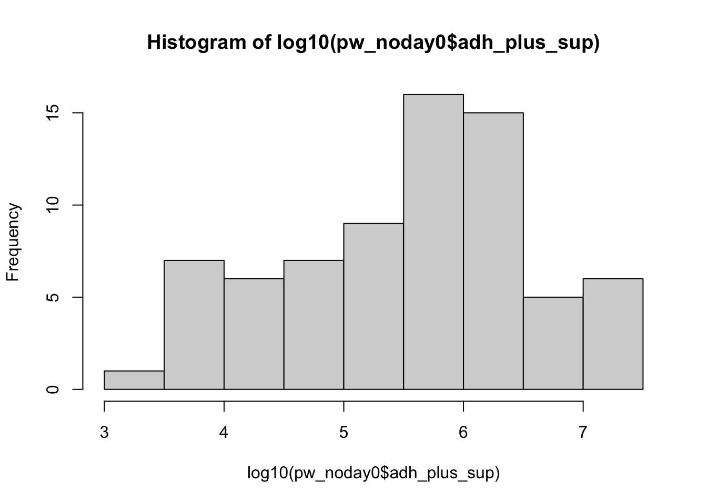
Code
shapiro.test(log10(pw_noday0$adh_plus_sup)) # not quite
Shapiro-Wilk normality test
data: log10(pw_noday0$adh_plus_sup)
W = 0.95623, p-value = 0.01361
Code
# transformedggqqplot(pw_noday0, "log_adh_plus_sup", title ="log transformed") # gorgeous
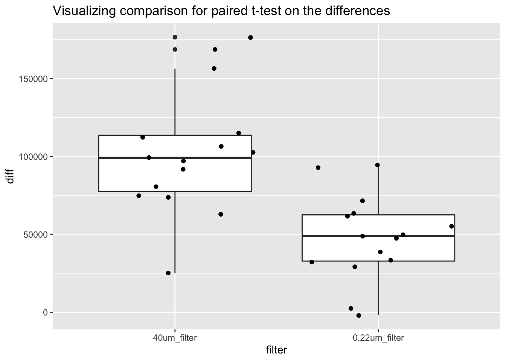
Code
hist(pw_noday0$log_adh_plus_sup) # better
Code
shapiro.test(pw_noday0$log_adh_plus_sup) # p-value = 0.01361, does not pass shapiro, but this has an n of 72 which is more than the recommended <50 samples
Shapiro-Wilk normality test
data: pw_noday0$log_adh_plus_sup
W = 0.95623, p-value = 0.01361
Code
# visualize comparisons# TB y or npw_noday0 %>%ggplot(aes(x = TB, y = log_adh_plus_sup)) +geom_boxplot()
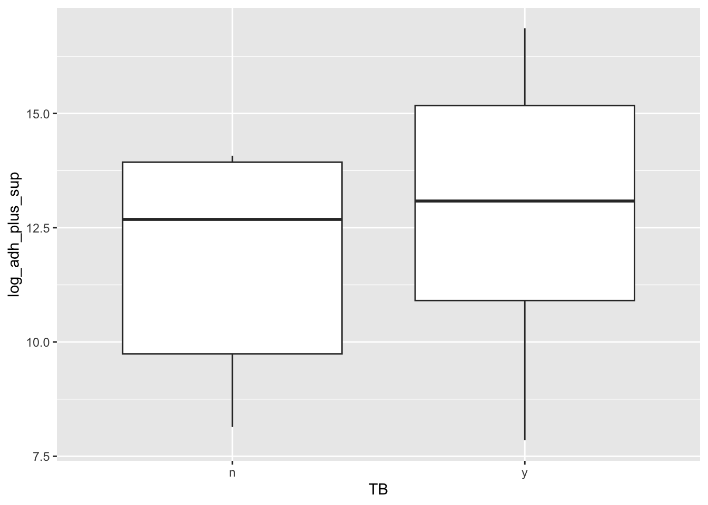
Code
# water_treatpw_noday0 %>%ggplot(aes(x = water_treatment, y = log_adh_plus_sup)) +geom_boxplot()
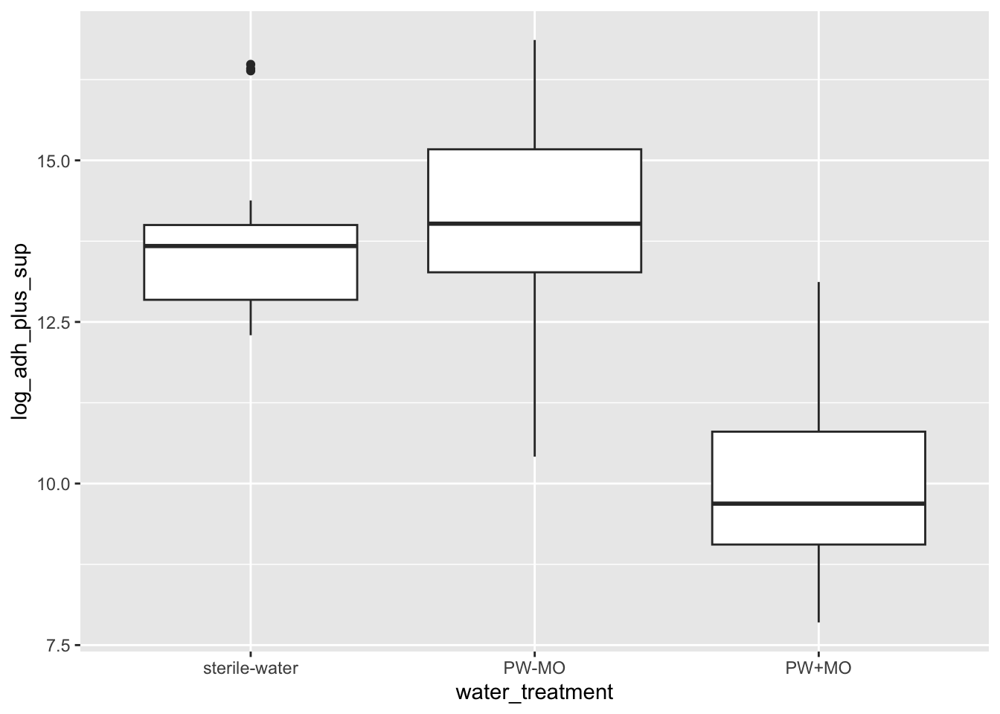
Code
# daypw_noday0 %>%ggplot(aes(x = day, y = log_adh_plus_sup)) +geom_boxplot()
2b Stats
Most appropriate comaprison for study design: daymicrobeswater_treatment
y variable: amount of Bd
x vars: day, TB y/n, water_treatment (pw with microbes, pw without, sterile water)
Question: Does the amount of Bd in the sample differ across the treatments of presence of water type (pw with microbes, pw without, sterile water), TB, and day?
Model: Linear model
Note: anovas, lm’s and glm’s are all linear models!
Try ANOVA with interactions: Bd ~ day*TB*water_treatment
important: does not pass anova assumption that resids are normally distributed
I tried different transformations with no luck either :(
Note: Kruskall wallace isn’t the best move here because I want interactions, if I cut the interactions, a normal anova works, so no need for a KW
Code
# build model# all interactionsmod3 <-aov(log_adh_plus_sup ~ day*TB*water_treatment,data = pw_noday0)# diagnostic plotpar(mfrow =c(2,2))plot(mod3) # NOT normal...
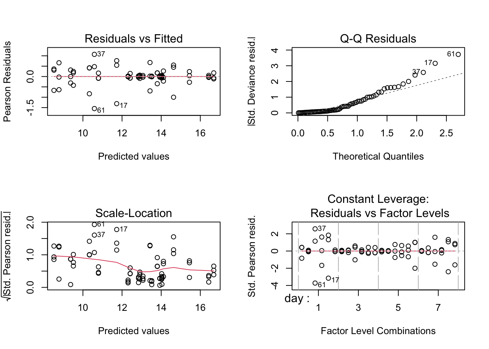
Code
# STOP: not normally distributed resids so can't interpret
GLM Bd ~ day*TB*water_treatment
Normal distribution GLM
Results
Day : Day 3 > Day 1 = Day 5 > Day 7
TB: With TB = more Bd than no TB (p <.0001)
Water treatment: any treatment with MO has lower Bd, sterile water and microbe free pond water are the same (p = 0.0629), pond water with microorganisms has less Bd than sterile water (p < 0.001), and pond water with MO has less Bd than pond water without (p < 0.001)
Interactions are all significant, except TB:water_treatment. I recommend putting these in a table, rather than listing them here, but 5 & 6 summarize them
Day and presence of TB: After day 1, there was less Bd in treatments without TB, but on day 1, there was no difference
Day and water treatment: across all days, the water treatment trend holds that presence of MO will have lower Bd than without. However, there are nuances between the sterile water and the filtered pond water.
on days 5&7 sterile water had more Bd than pond water without microbes, but on day 1, sterile water had more Bd than pond water with no microbes, but on day 3, there was no difference.
Code
# normal distribution, should be relatively the same as the anovamod3_glm <-glm(log_adh_plus_sup ~ day * TB * water_treatment,data = pw_noday0,family =gaussian(link ="identity"))par(mfrow =c(2,2))plot(mod3_glm) # better...!
# source for use of anova function on a glm: https://dshizuka.github.io/RCourse/05.1.Stats_LinearModels.html#:~:text=Since%20ANOVA%20is%20a%20linear,to%20get%20the%20F%20statistic.# all comparisonsem <-emmeans(mod3_glm, ~ day * TB * water_treatment)# Perform the Tukey test for pairwise comparisonspairwise_comparisons <-contrast(em, method ="pairwise", adjust ="tukey")summary(pairwise_comparisons)
contrast estimate SE df t.ratio
(day1 n sterile-water) - (day3 n sterile-water) -0.1275 0.415 48 -0.307
(day1 n sterile-water) - (day5 n sterile-water) 0.9592 0.415 48 2.310
(day1 n sterile-water) - (day7 n sterile-water) 1.4940 0.415 48 3.597
(day1 n sterile-water) - (day1 y sterile-water) 0.3724 0.415 48 0.897
(day1 n sterile-water) - (day3 y sterile-water) -2.6283 0.415 48 -6.329
(day1 n sterile-water) - (day5 y sterile-water) -0.3135 0.415 48 -0.755
(day1 n sterile-water) - (day7 y sterile-water) 0.8918 0.415 48 2.147
(day1 n sterile-water) - (day1 n PW-MO) -0.2374 0.415 48 -0.571
(day1 n sterile-water) - (day3 n PW-MO) -0.2249 0.415 48 -0.541
(day1 n sterile-water) - (day5 n PW-MO) 0.2837 0.415 48 0.683
(day1 n sterile-water) - (day7 n PW-MO) 1.3869 0.415 48 3.339
(day1 n sterile-water) - (day1 y PW-MO) 2.0753 0.415 48 4.997
(day1 n sterile-water) - (day3 y PW-MO) -2.8852 0.415 48 -6.947
(day1 n sterile-water) - (day5 y PW-MO) -1.6421 0.415 48 -3.954
(day1 n sterile-water) - (day7 y PW-MO) -0.8305 0.415 48 -2.000
(day1 n sterile-water) - (day1 n PW+MO) 3.2147 0.415 48 7.740
(day1 n sterile-water) - (day3 n PW+MO) 4.2892 0.415 48 10.328
(day1 n sterile-water) - (day5 n PW+MO) 4.4292 0.415 48 10.665
(day1 n sterile-water) - (day7 n PW+MO) 5.0242 0.415 48 12.097
(day1 n sterile-water) - (day1 y PW+MO) 0.7330 0.415 48 1.765
(day1 n sterile-water) - (day3 y PW+MO) 3.0076 0.415 48 7.242
(day1 n sterile-water) - (day5 y PW+MO) 3.4704 0.415 48 8.356
(day1 n sterile-water) - (day7 y PW+MO) 5.2821 0.415 48 12.718
(day3 n sterile-water) - (day5 n sterile-water) 1.0867 0.415 48 2.617
(day3 n sterile-water) - (day7 n sterile-water) 1.6215 0.415 48 3.904
(day3 n sterile-water) - (day1 y sterile-water) 0.4999 0.415 48 1.204
(day3 n sterile-water) - (day3 y sterile-water) -2.5009 0.415 48 -6.022
(day3 n sterile-water) - (day5 y sterile-water) -0.1860 0.415 48 -0.448
(day3 n sterile-water) - (day7 y sterile-water) 1.0193 0.415 48 2.454
(day3 n sterile-water) - (day1 n PW-MO) -0.1099 0.415 48 -0.265
(day3 n sterile-water) - (day3 n PW-MO) -0.0974 0.415 48 -0.234
(day3 n sterile-water) - (day5 n PW-MO) 0.4112 0.415 48 0.990
(day3 n sterile-water) - (day7 n PW-MO) 1.5143 0.415 48 3.646
(day3 n sterile-water) - (day1 y PW-MO) 2.2028 0.415 48 5.304
(day3 n sterile-water) - (day3 y PW-MO) -2.7577 0.415 48 -6.640
(day3 n sterile-water) - (day5 y PW-MO) -1.5146 0.415 48 -3.647
(day3 n sterile-water) - (day7 y PW-MO) -0.7030 0.415 48 -1.693
(day3 n sterile-water) - (day1 n PW+MO) 3.3421 0.415 48 8.047
(day3 n sterile-water) - (day3 n PW+MO) 4.4167 0.415 48 10.634
(day3 n sterile-water) - (day5 n PW+MO) 4.5567 0.415 48 10.972
(day3 n sterile-water) - (day7 n PW+MO) 5.1517 0.415 48 12.404
(day3 n sterile-water) - (day1 y PW+MO) 0.8604 0.415 48 2.072
(day3 n sterile-water) - (day3 y PW+MO) 3.1351 0.415 48 7.549
(day3 n sterile-water) - (day5 y PW+MO) 3.5979 0.415 48 8.663
(day3 n sterile-water) - (day7 y PW+MO) 5.4096 0.415 48 13.025
(day5 n sterile-water) - (day7 n sterile-water) 0.5347 0.415 48 1.288
(day5 n sterile-water) - (day1 y sterile-water) -0.5868 0.415 48 -1.413
(day5 n sterile-water) - (day3 y sterile-water) -3.5876 0.415 48 -8.638
(day5 n sterile-water) - (day5 y sterile-water) -1.2727 0.415 48 -3.065
(day5 n sterile-water) - (day7 y sterile-water) -0.0674 0.415 48 -0.162
(day5 n sterile-water) - (day1 n PW-MO) -1.1966 0.415 48 -2.881
(day5 n sterile-water) - (day3 n PW-MO) -1.1841 0.415 48 -2.851
(day5 n sterile-water) - (day5 n PW-MO) -0.6755 0.415 48 -1.627
(day5 n sterile-water) - (day7 n PW-MO) 0.4276 0.415 48 1.030
(day5 n sterile-water) - (day1 y PW-MO) 1.1161 0.415 48 2.687
(day5 n sterile-water) - (day3 y PW-MO) -3.8444 0.415 48 -9.257
(day5 n sterile-water) - (day5 y PW-MO) -2.6013 0.415 48 -6.263
(day5 n sterile-water) - (day7 y PW-MO) -1.7898 0.415 48 -4.309
(day5 n sterile-water) - (day1 n PW+MO) 2.2554 0.415 48 5.431
(day5 n sterile-water) - (day3 n PW+MO) 3.3300 0.415 48 8.018
(day5 n sterile-water) - (day5 n PW+MO) 3.4700 0.415 48 8.355
(day5 n sterile-water) - (day7 n PW+MO) 4.0650 0.415 48 9.788
(day5 n sterile-water) - (day1 y PW+MO) -0.2263 0.415 48 -0.545
(day5 n sterile-water) - (day3 y PW+MO) 2.0484 0.415 48 4.932
(day5 n sterile-water) - (day5 y PW+MO) 2.5112 0.415 48 6.047
(day5 n sterile-water) - (day7 y PW+MO) 4.3229 0.415 48 10.409
(day7 n sterile-water) - (day1 y sterile-water) -1.1216 0.415 48 -2.701
(day7 n sterile-water) - (day3 y sterile-water) -4.1223 0.415 48 -9.926
(day7 n sterile-water) - (day5 y sterile-water) -1.8075 0.415 48 -4.352
(day7 n sterile-water) - (day7 y sterile-water) -0.6021 0.415 48 -1.450
(day7 n sterile-water) - (day1 n PW-MO) -1.7313 0.415 48 -4.169
(day7 n sterile-water) - (day3 n PW-MO) -1.7188 0.415 48 -4.139
(day7 n sterile-water) - (day5 n PW-MO) -1.2103 0.415 48 -2.914
(day7 n sterile-water) - (day7 n PW-MO) -0.1071 0.415 48 -0.258
(day7 n sterile-water) - (day1 y PW-MO) 0.5813 0.415 48 1.400
(day7 n sterile-water) - (day3 y PW-MO) -4.3792 0.415 48 -10.544
(day7 n sterile-water) - (day5 y PW-MO) -3.1361 0.415 48 -7.551
(day7 n sterile-water) - (day7 y PW-MO) -2.3245 0.415 48 -5.597
(day7 n sterile-water) - (day1 n PW+MO) 1.7207 0.415 48 4.143
(day7 n sterile-water) - (day3 n PW+MO) 2.7952 0.415 48 6.730
(day7 n sterile-water) - (day5 n PW+MO) 2.9353 0.415 48 7.068
(day7 n sterile-water) - (day7 n PW+MO) 3.5302 0.415 48 8.500
(day7 n sterile-water) - (day1 y PW+MO) -0.7610 0.415 48 -1.832
(day7 n sterile-water) - (day3 y PW+MO) 1.5136 0.415 48 3.645
(day7 n sterile-water) - (day5 y PW+MO) 1.9765 0.415 48 4.759
(day7 n sterile-water) - (day7 y PW+MO) 3.7881 0.415 48 9.121
(day1 y sterile-water) - (day3 y sterile-water) -3.0007 0.415 48 -7.225
(day1 y sterile-water) - (day5 y sterile-water) -0.6859 0.415 48 -1.652
(day1 y sterile-water) - (day7 y sterile-water) 0.5194 0.415 48 1.251
(day1 y sterile-water) - (day1 n PW-MO) -0.6097 0.415 48 -1.468
(day1 y sterile-water) - (day3 n PW-MO) -0.5972 0.415 48 -1.438
(day1 y sterile-water) - (day5 n PW-MO) -0.0887 0.415 48 -0.214
(day1 y sterile-water) - (day7 n PW-MO) 1.0145 0.415 48 2.443
(day1 y sterile-water) - (day1 y PW-MO) 1.7029 0.415 48 4.100
(day1 y sterile-water) - (day3 y PW-MO) -3.2576 0.415 48 -7.844
(day1 y sterile-water) - (day5 y PW-MO) -2.0145 0.415 48 -4.850
(day1 y sterile-water) - (day7 y PW-MO) -1.2029 0.415 48 -2.896
(day1 y sterile-water) - (day1 n PW+MO) 2.8423 0.415 48 6.844
(day1 y sterile-water) - (day3 n PW+MO) 3.9168 0.415 48 9.431
(day1 y sterile-water) - (day5 n PW+MO) 4.0569 0.415 48 9.768
(day1 y sterile-water) - (day7 n PW+MO) 4.6518 0.415 48 11.201
(day1 y sterile-water) - (day1 y PW+MO) 0.3606 0.415 48 0.868
(day1 y sterile-water) - (day3 y PW+MO) 2.6352 0.415 48 6.345
(day1 y sterile-water) - (day5 y PW+MO) 3.0981 0.415 48 7.460
(day1 y sterile-water) - (day7 y PW+MO) 4.9097 0.415 48 11.822
(day3 y sterile-water) - (day5 y sterile-water) 2.3148 0.415 48 5.574
(day3 y sterile-water) - (day7 y sterile-water) 3.5202 0.415 48 8.476
(day3 y sterile-water) - (day1 n PW-MO) 2.3910 0.415 48 5.757
(day3 y sterile-water) - (day3 n PW-MO) 2.4035 0.415 48 5.787
(day3 y sterile-water) - (day5 n PW-MO) 2.9120 0.415 48 7.012
(day3 y sterile-water) - (day7 n PW-MO) 4.0152 0.415 48 9.668
(day3 y sterile-water) - (day1 y PW-MO) 4.7036 0.415 48 11.325
(day3 y sterile-water) - (day3 y PW-MO) -0.2569 0.415 48 -0.618
(day3 y sterile-water) - (day5 y PW-MO) 0.9862 0.415 48 2.375
(day3 y sterile-water) - (day7 y PW-MO) 1.7978 0.415 48 4.329
(day3 y sterile-water) - (day1 n PW+MO) 5.8430 0.415 48 14.069
(day3 y sterile-water) - (day3 n PW+MO) 6.9175 0.415 48 16.656
(day3 y sterile-water) - (day5 n PW+MO) 7.0576 0.415 48 16.993
(day3 y sterile-water) - (day7 n PW+MO) 7.6526 0.415 48 18.426
(day3 y sterile-water) - (day1 y PW+MO) 3.3613 0.415 48 8.093
(day3 y sterile-water) - (day3 y PW+MO) 5.6359 0.415 48 13.570
(day3 y sterile-water) - (day5 y PW+MO) 6.0988 0.415 48 14.685
(day3 y sterile-water) - (day7 y PW+MO) 7.9104 0.415 48 19.047
(day5 y sterile-water) - (day7 y sterile-water) 1.2053 0.415 48 2.902
(day5 y sterile-water) - (day1 n PW-MO) 0.0762 0.415 48 0.183
(day5 y sterile-water) - (day3 n PW-MO) 0.0887 0.415 48 0.213
(day5 y sterile-water) - (day5 n PW-MO) 0.5972 0.415 48 1.438
(day5 y sterile-water) - (day7 n PW-MO) 1.7004 0.415 48 4.094
(day5 y sterile-water) - (day1 y PW-MO) 2.3888 0.415 48 5.752
(day5 y sterile-water) - (day3 y PW-MO) -2.5717 0.415 48 -6.192
(day5 y sterile-water) - (day5 y PW-MO) -1.3286 0.415 48 -3.199
(day5 y sterile-water) - (day7 y PW-MO) -0.5170 0.415 48 -1.245
(day5 y sterile-water) - (day1 n PW+MO) 3.5282 0.415 48 8.495
(day5 y sterile-water) - (day3 n PW+MO) 4.6027 0.415 48 11.082
(day5 y sterile-water) - (day5 n PW+MO) 4.7428 0.415 48 11.420
(day5 y sterile-water) - (day7 n PW+MO) 5.3377 0.415 48 12.852
(day5 y sterile-water) - (day1 y PW+MO) 1.0465 0.415 48 2.520
(day5 y sterile-water) - (day3 y PW+MO) 3.3211 0.415 48 7.997
(day5 y sterile-water) - (day5 y PW+MO) 3.7840 0.415 48 9.111
(day5 y sterile-water) - (day7 y PW+MO) 5.5956 0.415 48 13.473
(day7 y sterile-water) - (day1 n PW-MO) -1.1292 0.415 48 -2.719
(day7 y sterile-water) - (day3 n PW-MO) -1.1167 0.415 48 -2.689
(day7 y sterile-water) - (day5 n PW-MO) -0.6081 0.415 48 -1.464
(day7 y sterile-water) - (day7 n PW-MO) 0.4950 0.415 48 1.192
(day7 y sterile-water) - (day1 y PW-MO) 1.1835 0.415 48 2.850
(day7 y sterile-water) - (day3 y PW-MO) -3.7770 0.415 48 -9.094
(day7 y sterile-water) - (day5 y PW-MO) -2.5339 0.415 48 -6.101
(day7 y sterile-water) - (day7 y PW-MO) -1.7224 0.415 48 -4.147
(day7 y sterile-water) - (day1 n PW+MO) 2.3228 0.415 48 5.593
(day7 y sterile-water) - (day3 n PW+MO) 3.3974 0.415 48 8.180
(day7 y sterile-water) - (day5 n PW+MO) 3.5374 0.415 48 8.517
(day7 y sterile-water) - (day7 n PW+MO) 4.1324 0.415 48 9.950
(day7 y sterile-water) - (day1 y PW+MO) -0.1589 0.415 48 -0.383
(day7 y sterile-water) - (day3 y PW+MO) 2.1158 0.415 48 5.094
(day7 y sterile-water) - (day5 y PW+MO) 2.5786 0.415 48 6.209
(day7 y sterile-water) - (day7 y PW+MO) 4.3903 0.415 48 10.571
(day1 n PW-MO) - (day3 n PW-MO) 0.0125 0.415 48 0.030
(day1 n PW-MO) - (day5 n PW-MO) 0.5210 0.415 48 1.255
(day1 n PW-MO) - (day7 n PW-MO) 1.6242 0.415 48 3.911
(day1 n PW-MO) - (day1 y PW-MO) 2.3126 0.415 48 5.568
(day1 n PW-MO) - (day3 y PW-MO) -2.6479 0.415 48 -6.376
(day1 n PW-MO) - (day5 y PW-MO) -1.4047 0.415 48 -3.382
(day1 n PW-MO) - (day7 y PW-MO) -0.5932 0.415 48 -1.428
(day1 n PW-MO) - (day1 n PW+MO) 3.4520 0.415 48 8.312
(day1 n PW-MO) - (day3 n PW+MO) 4.5265 0.415 48 10.899
(day1 n PW-MO) - (day5 n PW+MO) 4.6666 0.415 48 11.236
(day1 n PW-MO) - (day7 n PW+MO) 5.2616 0.415 48 12.669
(day1 n PW-MO) - (day1 y PW+MO) 0.9703 0.415 48 2.336
(day1 n PW-MO) - (day3 y PW+MO) 3.2450 0.415 48 7.813
(day1 n PW-MO) - (day5 y PW+MO) 3.7078 0.415 48 8.928
(day1 n PW-MO) - (day7 y PW+MO) 5.5194 0.415 48 13.290
(day3 n PW-MO) - (day5 n PW-MO) 0.5086 0.415 48 1.224
(day3 n PW-MO) - (day7 n PW-MO) 1.6117 0.415 48 3.881
(day3 n PW-MO) - (day1 y PW-MO) 2.3001 0.415 48 5.538
(day3 n PW-MO) - (day3 y PW-MO) -2.6603 0.415 48 -6.406
(day3 n PW-MO) - (day5 y PW-MO) -1.4172 0.415 48 -3.412
(day3 n PW-MO) - (day7 y PW-MO) -0.6057 0.415 48 -1.458
(day3 n PW-MO) - (day1 n PW+MO) 3.4395 0.415 48 8.282
(day3 n PW-MO) - (day3 n PW+MO) 4.5140 0.415 48 10.869
(day3 n PW-MO) - (day5 n PW+MO) 4.6541 0.415 48 11.206
(day3 n PW-MO) - (day7 n PW+MO) 5.2491 0.415 48 12.639
(day3 n PW-MO) - (day1 y PW+MO) 0.9578 0.415 48 2.306
(day3 n PW-MO) - (day3 y PW+MO) 3.2325 0.415 48 7.783
(day3 n PW-MO) - (day5 y PW+MO) 3.6953 0.415 48 8.898
(day3 n PW-MO) - (day7 y PW+MO) 5.5070 0.415 48 13.260
(day5 n PW-MO) - (day7 n PW-MO) 1.1032 0.415 48 2.656
(day5 n PW-MO) - (day1 y PW-MO) 1.7916 0.415 48 4.314
(day5 n PW-MO) - (day3 y PW-MO) -3.1689 0.415 48 -7.630
(day5 n PW-MO) - (day5 y PW-MO) -1.9258 0.415 48 -4.637
(day5 n PW-MO) - (day7 y PW-MO) -1.1142 0.415 48 -2.683
(day5 n PW-MO) - (day1 n PW+MO) 2.9310 0.415 48 7.057
(day5 n PW-MO) - (day3 n PW+MO) 4.0055 0.415 48 9.644
(day5 n PW-MO) - (day5 n PW+MO) 4.1456 0.415 48 9.982
(day5 n PW-MO) - (day7 n PW+MO) 4.7405 0.415 48 11.414
(day5 n PW-MO) - (day1 y PW+MO) 0.4493 0.415 48 1.082
(day5 n PW-MO) - (day3 y PW+MO) 2.7239 0.415 48 6.559
(day5 n PW-MO) - (day5 y PW+MO) 3.1868 0.415 48 7.673
(day5 n PW-MO) - (day7 y PW+MO) 4.9984 0.415 48 12.035
(day7 n PW-MO) - (day1 y PW-MO) 0.6884 0.415 48 1.658
(day7 n PW-MO) - (day3 y PW-MO) -4.2721 0.415 48 -10.286
(day7 n PW-MO) - (day5 y PW-MO) -3.0290 0.415 48 -7.293
(day7 n PW-MO) - (day7 y PW-MO) -2.2174 0.415 48 -5.339
(day7 n PW-MO) - (day1 n PW+MO) 1.8278 0.415 48 4.401
(day7 n PW-MO) - (day3 n PW+MO) 2.9023 0.415 48 6.988
(day7 n PW-MO) - (day5 n PW+MO) 3.0424 0.415 48 7.325
(day7 n PW-MO) - (day7 n PW+MO) 3.6373 0.415 48 8.758
(day7 n PW-MO) - (day1 y PW+MO) -0.6539 0.415 48 -1.574
(day7 n PW-MO) - (day3 y PW+MO) 1.6207 0.415 48 3.902
(day7 n PW-MO) - (day5 y PW+MO) 2.0836 0.415 48 5.017
(day7 n PW-MO) - (day7 y PW+MO) 3.8952 0.415 48 9.379
(day1 y PW-MO) - (day3 y PW-MO) -4.9605 0.415 48 -11.944
(day1 y PW-MO) - (day5 y PW-MO) -3.7174 0.415 48 -8.951
(day1 y PW-MO) - (day7 y PW-MO) -2.9058 0.415 48 -6.997
(day1 y PW-MO) - (day1 n PW+MO) 1.1394 0.415 48 2.743
(day1 y PW-MO) - (day3 n PW+MO) 2.2139 0.415 48 5.331
(day1 y PW-MO) - (day5 n PW+MO) 2.3540 0.415 48 5.668
(day1 y PW-MO) - (day7 n PW+MO) 2.9489 0.415 48 7.100
(day1 y PW-MO) - (day1 y PW+MO) -1.3423 0.415 48 -3.232
(day1 y PW-MO) - (day3 y PW+MO) 0.9323 0.415 48 2.245
(day1 y PW-MO) - (day5 y PW+MO) 1.3952 0.415 48 3.359
(day1 y PW-MO) - (day7 y PW+MO) 3.2068 0.415 48 7.721
(day3 y PW-MO) - (day5 y PW-MO) 1.2431 0.415 48 2.993
(day3 y PW-MO) - (day7 y PW-MO) 2.0547 0.415 48 4.947
(day3 y PW-MO) - (day1 n PW+MO) 6.0999 0.415 48 14.687
(day3 y PW-MO) - (day3 n PW+MO) 7.1744 0.415 48 17.275
(day3 y PW-MO) - (day5 n PW+MO) 7.3144 0.415 48 17.612
(day3 y PW-MO) - (day7 n PW+MO) 7.9094 0.415 48 19.044
(day3 y PW-MO) - (day1 y PW+MO) 3.6182 0.415 48 8.712
(day3 y PW-MO) - (day3 y PW+MO) 5.8928 0.415 48 14.189
(day3 y PW-MO) - (day5 y PW+MO) 6.3556 0.415 48 15.303
(day3 y PW-MO) - (day7 y PW+MO) 8.1673 0.415 48 19.665
(day5 y PW-MO) - (day7 y PW-MO) 0.8116 0.415 48 1.954
(day5 y PW-MO) - (day1 n PW+MO) 4.8568 0.415 48 11.694
(day5 y PW-MO) - (day3 n PW+MO) 5.9313 0.415 48 14.281
(day5 y PW-MO) - (day5 n PW+MO) 6.0713 0.415 48 14.619
(day5 y PW-MO) - (day7 n PW+MO) 6.6663 0.415 48 16.051
(day5 y PW-MO) - (day1 y PW+MO) 2.3751 0.415 48 5.719
(day5 y PW-MO) - (day3 y PW+MO) 4.6497 0.415 48 11.196
(day5 y PW-MO) - (day5 y PW+MO) 5.1125 0.415 48 12.310
(day5 y PW-MO) - (day7 y PW+MO) 6.9242 0.415 48 16.672
(day7 y PW-MO) - (day1 n PW+MO) 4.0452 0.415 48 9.740
(day7 y PW-MO) - (day3 n PW+MO) 5.1197 0.415 48 12.327
(day7 y PW-MO) - (day5 n PW+MO) 5.2598 0.415 48 12.664
(day7 y PW-MO) - (day7 n PW+MO) 5.8547 0.415 48 14.097
(day7 y PW-MO) - (day1 y PW+MO) 1.5635 0.415 48 3.765
(day7 y PW-MO) - (day3 y PW+MO) 3.8381 0.415 48 9.241
(day7 y PW-MO) - (day5 y PW+MO) 4.3010 0.415 48 10.356
(day7 y PW-MO) - (day7 y PW+MO) 6.1126 0.415 48 14.718
(day1 n PW+MO) - (day3 n PW+MO) 1.0745 0.415 48 2.587
(day1 n PW+MO) - (day5 n PW+MO) 1.2146 0.415 48 2.924
(day1 n PW+MO) - (day7 n PW+MO) 1.8095 0.415 48 4.357
(day1 n PW+MO) - (day1 y PW+MO) -2.4817 0.415 48 -5.975
(day1 n PW+MO) - (day3 y PW+MO) -0.2071 0.415 48 -0.499
(day1 n PW+MO) - (day5 y PW+MO) 0.2558 0.415 48 0.616
(day1 n PW+MO) - (day7 y PW+MO) 2.0674 0.415 48 4.978
(day3 n PW+MO) - (day5 n PW+MO) 0.1401 0.415 48 0.337
(day3 n PW+MO) - (day7 n PW+MO) 0.7350 0.415 48 1.770
(day3 n PW+MO) - (day1 y PW+MO) -3.5562 0.415 48 -8.563
(day3 n PW+MO) - (day3 y PW+MO) -1.2816 0.415 48 -3.086
(day3 n PW+MO) - (day5 y PW+MO) -0.8187 0.415 48 -1.971
(day3 n PW+MO) - (day7 y PW+MO) 0.9929 0.415 48 2.391
(day5 n PW+MO) - (day7 n PW+MO) 0.5950 0.415 48 1.433
(day5 n PW+MO) - (day1 y PW+MO) -3.6963 0.415 48 -8.900
(day5 n PW+MO) - (day3 y PW+MO) -1.4216 0.415 48 -3.423
(day5 n PW+MO) - (day5 y PW+MO) -0.9588 0.415 48 -2.309
(day5 n PW+MO) - (day7 y PW+MO) 0.8528 0.415 48 2.053
(day7 n PW+MO) - (day1 y PW+MO) -4.2913 0.415 48 -10.332
(day7 n PW+MO) - (day3 y PW+MO) -2.0166 0.415 48 -4.856
(day7 n PW+MO) - (day5 y PW+MO) -1.5538 0.415 48 -3.741
(day7 n PW+MO) - (day7 y PW+MO) 0.2579 0.415 48 0.621
(day1 y PW+MO) - (day3 y PW+MO) 2.2746 0.415 48 5.477
(day1 y PW+MO) - (day5 y PW+MO) 2.7375 0.415 48 6.591
(day1 y PW+MO) - (day7 y PW+MO) 4.5491 0.415 48 10.953
(day3 y PW+MO) - (day5 y PW+MO) 0.4628 0.415 48 1.114
(day3 y PW+MO) - (day7 y PW+MO) 2.2745 0.415 48 5.477
(day5 y PW+MO) - (day7 y PW+MO) 1.8116 0.415 48 4.362
p.value
1.0000
0.7920
0.0956
1.0000
<.0001
1.0000
0.8753
1.0000
1.0000
1.0000
0.1723
0.0017
<.0001
0.0384
0.9305
<.0001
<.0001
<.0001
<.0001
0.9795
<.0001
<.0001
<.0001
0.5893
0.0438
0.9999
0.0001
1.0000
0.7014
1.0000
1.0000
1.0000
0.0849
0.0006
<.0001
0.0847
0.9871
<.0001
<.0001
<.0001
<.0001
0.9061
<.0001
<.0001
<.0001
0.9997
0.9987
<.0001
0.2981
1.0000
0.4077
0.4273
0.9919
1.0000
0.5395
<.0001
<.0001
0.0141
0.0004
<.0001
<.0001
<.0001
1.0000
0.0021
0.0001
<.0001
0.5301
<.0001
0.0124
0.9982
0.0212
0.0230
0.3867
1.0000
0.9989
<.0001
<.0001
0.0002
0.0227
<.0001
<.0001
<.0001
0.9697
0.0852
0.0036
<.0001
<.0001
0.9903
0.9998
0.9978
0.9984
1.0000
0.7091
0.0257
<.0001
0.0027
0.3979
<.0001
<.0001
<.0001
<.0001
1.0000
<.0001
<.0001
<.0001
0.0003
<.0001
0.0001
0.0001
<.0001
<.0001
<.0001
1.0000
0.7528
0.0133
<.0001
<.0001
<.0001
<.0001
<.0001
<.0001
<.0001
<.0001
0.3942
1.0000
1.0000
0.9984
0.0261
0.0001
<.0001
0.2306
0.9998
<.0001
<.0001
<.0001
<.0001
0.6570
<.0001
<.0001
<.0001
0.5174
0.5384
0.9979
0.9999
0.4283
<.0001
<.0001
0.0225
0.0002
<.0001
<.0001
<.0001
1.0000
0.0012
<.0001
<.0001
1.0000
0.9998
0.0431
0.0003
<.0001
0.1569
0.9985
<.0001
<.0001
<.0001
<.0001
0.7763
<.0001
<.0001
<.0001
0.9998
0.0467
0.0003
<.0001
0.1468
0.9980
<.0001
<.0001
<.0001
<.0001
0.7939
<.0001
<.0001
<.0001
0.5613
0.0139
<.0001
0.0053
0.5426
<.0001
<.0001
<.0001
<.0001
1.0000
<.0001
<.0001
<.0001
0.9899
<.0001
<.0001
0.0006
0.0108
<.0001
<.0001
<.0001
0.9946
0.0440
0.0016
<.0001
<.0001
<.0001
<.0001
0.5003
0.0006
0.0002
<.0001
0.2157
0.8279
0.1651
<.0001
0.3386
0.0020
<.0001
<.0001
<.0001
<.0001
<.0001
<.0001
<.0001
<.0001
0.9435
<.0001
<.0001
<.0001
<.0001
0.0002
<.0001
<.0001
<.0001
<.0001
<.0001
<.0001
<.0001
0.0631
<.0001
<.0001
<.0001
0.6100
0.3802
0.0123
0.0001
1.0000
1.0000
0.0018
1.0000
0.9789
<.0001
0.2867
0.9388
0.7427
0.9984
<.0001
0.1434
0.7926
0.9128
<.0001
0.0027
0.0670
1.0000
0.0004
<.0001
<.0001
1.0000
0.0004
0.0121
P value adjustment: tukey method for comparing a family of 24 estimates
Code
## First order comparisons# Pairwise comparisons for 'day'# Day 3 > Day 1 = Day 5 > Day 7pairwise_day <-emmeans(mod3_glm, pairwise ~ day, adjust ="tukey")
NOTE: Results may be misleading due to involvement in interactions
Code
pairwise_day
$emmeans
day emmean SE df lower.CL upper.CL
1 12.8 0.12 48 12.5 13.0
3 13.6 0.12 48 13.3 13.8
5 12.6 0.12 48 12.4 12.8
7 11.6 0.12 48 11.4 11.8
Results are averaged over the levels of: TB, water_treatment
Confidence level used: 0.95
$contrasts
contrast estimate SE df t.ratio p.value
day1 - day3 -0.788 0.17 48 -4.647 0.0002
day1 - day5 0.172 0.17 48 1.012 0.7435
day1 - day7 1.182 0.17 48 6.970 <.0001
day3 - day5 0.959 0.17 48 5.658 <.0001
day3 - day7 1.970 0.17 48 11.616 <.0001
day5 - day7 1.010 0.17 48 5.958 <.0001
Results are averaged over the levels of: TB, water_treatment
P value adjustment: tukey method for comparing a family of 4 estimates
NOTE: Results may be misleading due to involvement in interactions
Code
pairwise_TB
$emmeans
TB emmean SE df lower.CL upper.CL
n 12.1 0.0848 48 11.9 12.3
y 13.2 0.0848 48 13.0 13.3
Results are averaged over the levels of: day, water_treatment
Confidence level used: 0.95
$contrasts
contrast estimate SE df t.ratio p.value
n - y -1.08 0.12 48 -9.007 <.0001
Results are averaged over the levels of: day, water_treatment
NOTE: Results may be misleading due to involvement in interactions
Code
pairwise_water_treatment
$emmeans
water_treatment emmean SE df lower.CL upper.CL
sterile-water 13.7 0.104 48 13.51 13.9
PW-MO 14.1 0.104 48 13.85 14.3
PW+MO 10.1 0.104 48 9.91 10.3
Results are averaged over the levels of: day, TB
Confidence level used: 0.95
$contrasts
contrast estimate SE df t.ratio p.value
(sterile-water) - (PW-MO) -0.34 0.147 48 -2.317 0.0629
(sterile-water) - (PW+MO) 3.60 0.147 48 24.519 <.0001
(PW-MO) - (PW+MO) 3.94 0.147 48 26.836 <.0001
Results are averaged over the levels of: day, TB
P value adjustment: tukey method for comparing a family of 3 estimates
Code
plot(pairwise_water_treatment)
Code
## second order comparisons# day:TBpairwise_day_TB <-emmeans(mod3_glm, pairwise ~ TB | day, adjust ="tukey")
NOTE: Results may be misleading due to involvement in interactions
Code
pairwise_day_TB
$emmeans
day = 1:
TB emmean SE df lower.CL upper.CL
n 12.8 0.17 48 12.5 13.1
y 12.7 0.17 48 12.4 13.1
day = 3:
TB emmean SE df lower.CL upper.CL
n 12.5 0.17 48 12.1 12.8
y 14.6 0.17 48 14.3 15.0
day = 5:
TB emmean SE df lower.CL upper.CL
n 11.9 0.17 48 11.6 12.3
y 13.3 0.17 48 13.0 13.6
day = 7:
TB emmean SE df lower.CL upper.CL
n 11.2 0.17 48 10.8 11.5
y 12.0 0.17 48 11.7 12.4
Results are averaged over the levels of: water_treatment
Confidence level used: 0.95
$contrasts
day = 1:
contrast estimate SE df t.ratio p.value
n - y 0.0678 0.24 48 0.283 0.7787
day = 3:
contrast estimate SE df t.ratio p.value
n - y -2.1476 0.24 48 -8.956 <.0001
day = 5:
contrast estimate SE df t.ratio p.value
n - y -1.3858 0.24 48 -5.779 <.0001
day = 7:
contrast estimate SE df t.ratio p.value
n - y -0.8539 0.24 48 -3.561 0.0008
Results are averaged over the levels of: water_treatment
NOTE: Results may be misleading due to involvement in interactions
Code
pairwise_water_treatment_day
$emmeans
day = 1:
water_treatment emmean SE df lower.CL upper.CL
sterile-water 13.62 0.208 48 13.20 14.03
PW-MO 12.88 0.208 48 12.46 13.30
PW+MO 11.83 0.208 48 11.41 12.25
day = 3:
water_treatment emmean SE df lower.CL upper.CL
sterile-water 15.18 0.208 48 14.76 15.60
PW-MO 15.36 0.208 48 14.94 15.77
PW+MO 10.15 0.208 48 9.74 10.57
day = 5:
water_treatment emmean SE df lower.CL upper.CL
sterile-water 13.48 0.208 48 13.06 13.90
PW-MO 14.48 0.208 48 14.06 14.90
PW+MO 9.85 0.208 48 9.43 10.27
day = 7:
water_treatment emmean SE df lower.CL upper.CL
sterile-water 12.61 0.208 48 12.19 13.03
PW-MO 13.52 0.208 48 13.11 13.94
PW+MO 8.65 0.208 48 8.23 9.07
Results are averaged over the levels of: TB
Confidence level used: 0.95
$contrasts
day = 1:
contrast estimate SE df t.ratio p.value
(sterile-water) - (PW-MO) 0.733 0.294 48 2.495 0.0418
(sterile-water) - (PW+MO) 1.788 0.294 48 6.087 <.0001
(PW-MO) - (PW+MO) 1.055 0.294 48 3.592 0.0022
day = 3:
contrast estimate SE df t.ratio p.value
(sterile-water) - (PW-MO) -0.177 0.294 48 -0.603 0.8191
(sterile-water) - (PW+MO) 5.026 0.294 48 17.115 <.0001
(PW-MO) - (PW+MO) 5.203 0.294 48 17.718 <.0001
day = 5:
contrast estimate SE df t.ratio p.value
(sterile-water) - (PW-MO) -1.002 0.294 48 -3.412 0.0037
(sterile-water) - (PW+MO) 3.627 0.294 48 12.350 <.0001
(PW-MO) - (PW+MO) 4.629 0.294 48 15.763 <.0001
day = 7:
contrast estimate SE df t.ratio p.value
(sterile-water) - (PW-MO) -0.915 0.294 48 -3.115 0.0086
(sterile-water) - (PW+MO) 3.960 0.294 48 13.485 <.0001
(PW-MO) - (PW+MO) 4.875 0.294 48 16.600 <.0001
Results are averaged over the levels of: TB
P value adjustment: tukey method for comparing a family of 3 estimates
Code
plot(pairwise_water_treatment_day)
3b Aquatic environmental biofilm on Bd growth:
All microbe-depleted, NO pw microbe+ treatment
Renwei’s figure
ggplot version: replicating Renwei’s AE
Code
ae_summary <- ae %>%group_by(day, sample_ID) %>%reframe(mean =mean(adh), # calculate the meann =length(adh), # count the number of observationsdf = n -1, # calculate the degrees of freedomsd =sd(adh), # calculate the standard deviationse = sd/sqrt(n), # calculate the standard error ) %>%# add column for TB or nomutate(TB =case_when(str_detect(sample_ID, "TB") ~"y", TRUE~"n")) %>%# add column for PW or nomutate(PW =case_when(str_detect(sample_ID, "PW") ~"y", TRUE~"n"))ae_summary %>%# reorder to match Renwei's plotmutate(sample_ID =factor(sample_ID,levels =c("1%TB+AEbiofilm", "MQ+AEbiofilm","PW+AEBiofilm", "Added Bd" ))) %>%ggplot(aes(x = day,y = mean,color = sample_ID)) +geom_point(size =2) +geom_errorbar(aes(ymin = mean - se, # plot the standard errorymax = mean + se),width =0.1) +geom_line() +scale_y_log10(limits =c(1e3, 1e7),breaks =c(1e3, 1e4, 1e5, 1e6, 1e7)) +# vibeslabs(x ="Day",y ="Bd Quantity per sample (ZE/well)",title ="Environmental Biofilm",caption ="only adherent Bd visualized here (the only data we have)") +scale_color_manual(values =c("1%TB+AEbiofilm"="orange","MQ+AEbiofilm"="blue","PW+AEBiofilm"="magenta","Added Bd"="darkgrey")) +# Assign specific colors to match RC's plottheme_minimal() +theme(panel.grid.major.x =element_blank(), # Remove major vertical grid linespanel.grid.minor.x =element_blank()) +# Remove minor vertical grid linesscale_x_continuous(breaks =c(0, 1, 3, 5, 7))
Caitlin’s version AE
Code
ae_summary <- ae %>%group_by(day, sample_ID) %>%reframe(mean =mean(adh), # calculate the meann =length(adh), # count the number of observationsdf = n -1, # calculate the degrees of freedomsd =sd(adh), # calculate the standard deviationse = sd/sqrt(n), # calculate the standard error ) %>%# add column for TB or nomutate(TB =case_when(str_detect(sample_ID, "TB") ~"y", TRUE~"n")) %>%# add column for PW or nomutate(PW =case_when(str_detect(sample_ID, "PW") ~"y", TRUE~"n"))ae_summary %>%# reorder to match Renwei's plotmutate(sample_ID =factor(sample_ID,levels =c("1%TB+AEbiofilm", "MQ+AEbiofilm","PW+AEBiofilm", "Added Bd" ))) %>%ggplot(aes(x = day,y = mean,color = sample_ID)) +geom_point(size =2) +geom_errorbar(aes(ymin = mean - se, # plot the standard errorymax = mean + se),width =0.1) +geom_line() +scale_y_log10(limits =c(1e3, 1e7),breaks =c(1e3, 1e4, 1e5, 1e6, 1e7)) +# vibeslabs(x ="Day",y ="Bd Quantity in AE Biofilm (ZE/well)",color ="Medium with\nAE Biofilm")+# Title for color legendscale_color_manual(values =c("1%TB+AEbiofilm"="#4477AA","MQ+AEbiofilm"="#228833",#"Added Bd" = "darkgrey","PW+AEBiofilm"="#AA3377"),labels =c("1%TB+AEbiofilm"="TB Broth","MQ+AEbiofilm"="MQ Water","PW+AEBiofilm"="Filtered\nPond Water","Added Bd"="Initial Bd")) +# Custom labelsmyCustomTheme()+scale_x_continuous(breaks =c(0, 1, 3, 5, 7),labels =c("Initial\nBd", "1", "3", "5", "7"))
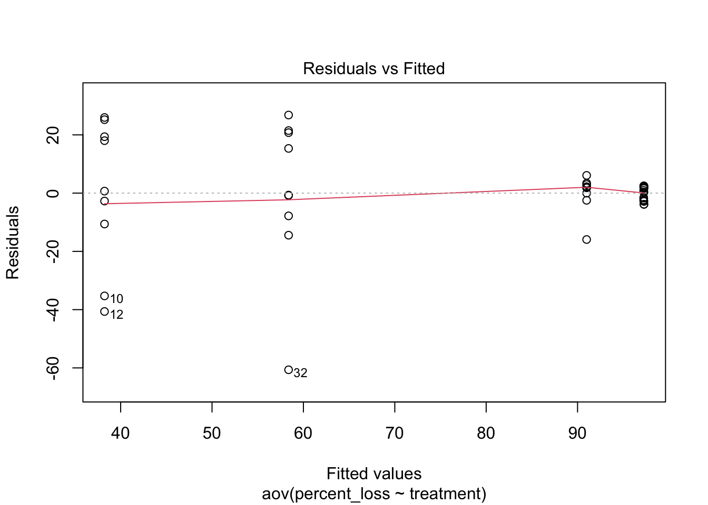
3b EDA
visualize y var: bd load
Code
# untransformedae_noday0 <- ae %>%filter(day !=0) %>%mutate(log_adh =log(adh)) # note: no zeroes so not log + 1ggqqplot(ae_noday0, "adh", title ="untransformed")
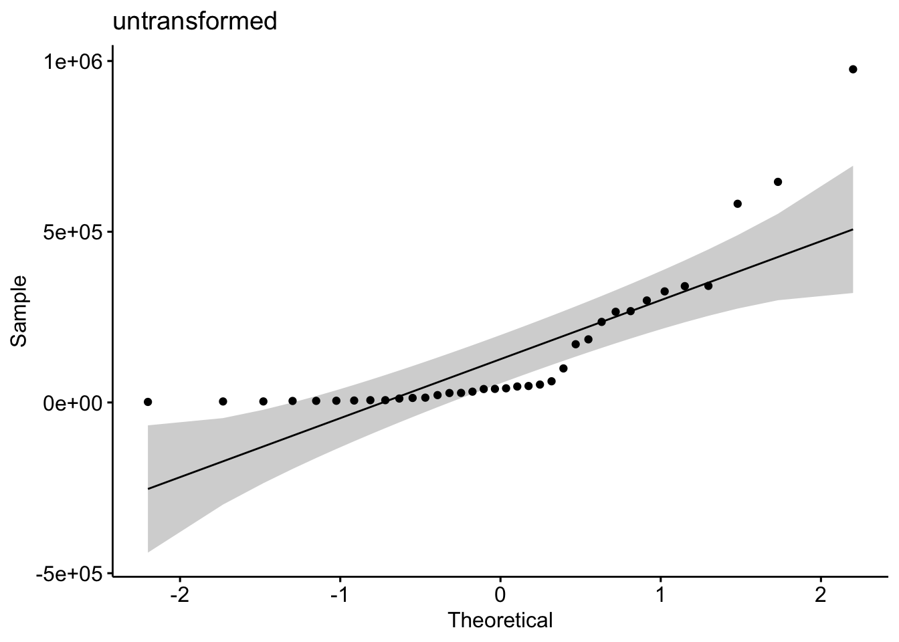
Code
shapiro.test(ae_noday0$adh) # nope
Shapiro-Wilk normality test
data: ae_noday0$adh
W = 0.69154, p-value = 2.089e-07
Code
hist(ae_noday0$adh) # note
Code
# transformedggqqplot(ae_noday0, "log_adh", title ="log transformed") # gorgeous
Code
hist(ae_noday0$log_adh) # better
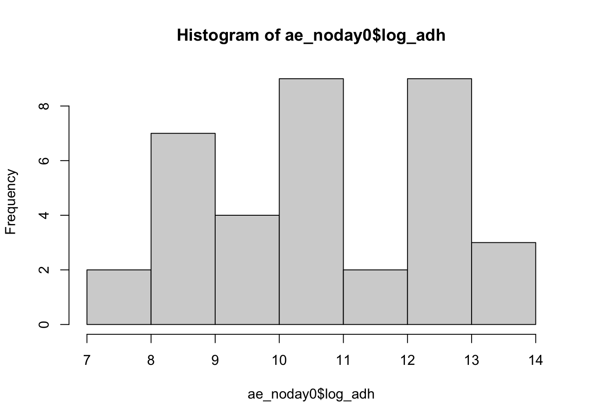
Code
shapiro.test(ae_noday0$log_adh) # p-value = 0.1699 def normal
Shapiro-Wilk normality test
data: ae_noday0$log_adh
W = 0.95671, p-value = 0.1699
3b Stats
Keep interaction, skedasticity isn’t “too bad”, and will show underlying data in plot to be super transparent
y var: amount of Bd in adherent
x vars: day & medium with the AE biofilm and Bd (MQ, TB, PW)
Bd ~ day*medium
Question: Does the amount of Bd in the aquatic environmental biofilm differ across the media tested and across the days, and do they interact with each other?
Model: 2-way ANOVA
Summary of results
Bd qty Day 1 > Day 3 > Day 5 > Day 7 (all p <0.005) in other words, Bd significantly reduced each day
MQ+AEbiofilm > PW+AEBiofilm > 1%TB+AEbiofilm (all p <0.005) In other words, TB plus biofilm has most Bd inhibition power, followed by pond water, then by milliQ with the least inhibition power
Code
# quick check: we want day as a FACTORae_noday0 <- ae_noday0 %>%mutate(day =as.factor(day)) %>%# column for mediummutate(medium = sample_ID)str(ae_noday0$day)
monolayer_summary <- monolayer %>%group_by(day, sample_ID) %>%reframe(mean =mean(adh), # calculate the meann =length(adh), # count the number of observationsdf = n -1, # calculate the degrees of freedomsd =sd(adh), # calculate the standard deviationse = sd/sqrt(n), # calculate the standard error ) %>%mutate(microbes =case_when(str_detect(sample_ID, "\\+microbes") ~"y",TRUE~"n")) %>%# add column for TB or nomutate(TB =case_when(str_detect(sample_ID, "TB") ~"y", TRUE~"n")) %>%# add column for PW or nomutate(PW =case_when(str_detect(sample_ID, "PW") ~"y", TRUE~"n")) monolayer_summary %>%# reorder to match Renwei's plotmutate(sample_ID =factor(sample_ID, levels =c("TB+PW+microbes","PW+microbes","TB+PW-microbes", "PW-microbes"))) %>%ggplot(aes(x = day, y = mean, color = sample_ID)) +geom_point(size =2) +geom_errorbar(aes(ymin = mean - se, # plot the standard errorymax = mean + se),width =0.1) +geom_line(aes(linetype = microbes)) +scale_y_log10(limits =c(1e4, 1e8), breaks =c(1e4, 1e5, 1e6, 1e7, 1e8)) +# vibeslabs(x ="Day",y ="Bd Quantity per sample (ZE/well)",title ="Monolayer",caption ="supernatant plus adherent visualized here") +scale_color_manual(values =c("TB+PW+microbes"="palegreen4", "PW+microbes"="magenta", "TB+PW-microbes"="chocolate4", "PW-microbes"="purple")) +# Assign specific colors to match RC's plotscale_linetype_manual(values =c("n"="dashed", "y"="solid")) +theme_minimal() +theme(panel.grid.major.x =element_blank(), # Remove major vertical grid linespanel.grid.minor.x =element_blank()) +# Remove minor vertical grid linesscale_x_continuous(breaks =c(0, 1, 3, 5, 7))
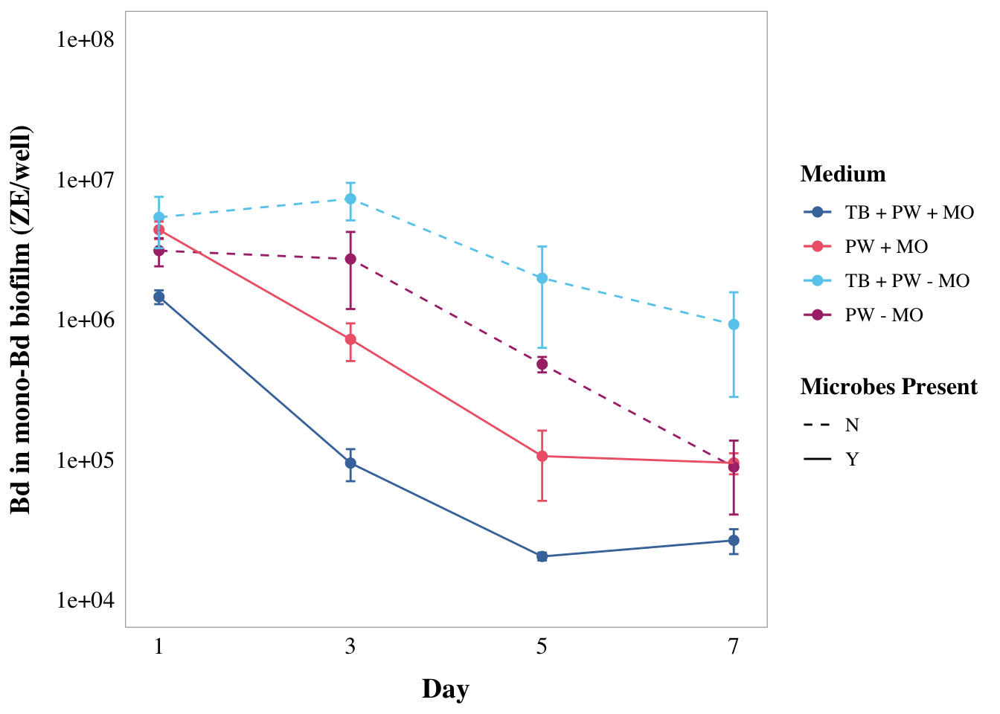
Caitlin’s version ML
Code
monolayer_summary <- monolayer %>%group_by(day, sample_ID) %>%reframe(mean =mean(adh), # calculate the meann =length(adh), # count the number of observationsdf = n -1, # calculate the degrees of freedomsd =sd(adh), # calculate the standard deviationse = sd/sqrt(n), # calculate the standard error ) %>%mutate(microbes =case_when(str_detect(sample_ID, "\\+microbes") ~"y",TRUE~"n")) %>%# add column for TB or nomutate(TB =case_when(str_detect(sample_ID, "TB") ~"y", TRUE~"n")) %>%# add column for PW or nomutate(PW =case_when(str_detect(sample_ID, "PW") ~"y", TRUE~"n")) monolayer_summary %>%# reorder to match Renwei's plotmutate(sample_ID =factor(sample_ID, levels =c("TB+PW+microbes","PW+microbes","TB+PW-microbes", "PW-microbes"))) %>%ggplot(aes(x = day, y = mean, color = sample_ID)) +geom_point(size =2) +geom_errorbar(aes(ymin = mean - se, # plot the standard errorymax = mean + se),width =0.1) +geom_line(aes(linetype = microbes)) +scale_y_log10(limits =c(1e4, 1e8), breaks =c(1e4, 1e5, 1e6, 1e7, 1e8)) +# vibeslabs(x ="Day",y ="Bd in mono-Bd biofilm (ZE/well)",color ="Medium", # Title for color legendlinetype ="Microbes Present") +scale_color_manual(values =c("TB+PW+microbes"="#4477AA", "PW+microbes"="#EE6677", "TB+PW-microbes"="#66CCEE", "PW-microbes"="#AA3377"), labels =c("TB+PW+microbes"="TB + PW + MO","PW+microbes"="PW + MO","TB+PW-microbes"="TB + PW - MO","PW-microbes"="PW - MO")) +# Custom labelsmyCustomTheme()+scale_linetype_manual(values =c("n"="dashed", "y"="solid"),labels =c("n"="N", "y"="Y")) +# Change labels to uppercase N and Yscale_x_continuous(breaks =c(0, 1, 3, 5, 7),labels =c("Initial\nBd", "1", "3", "5", "7"))
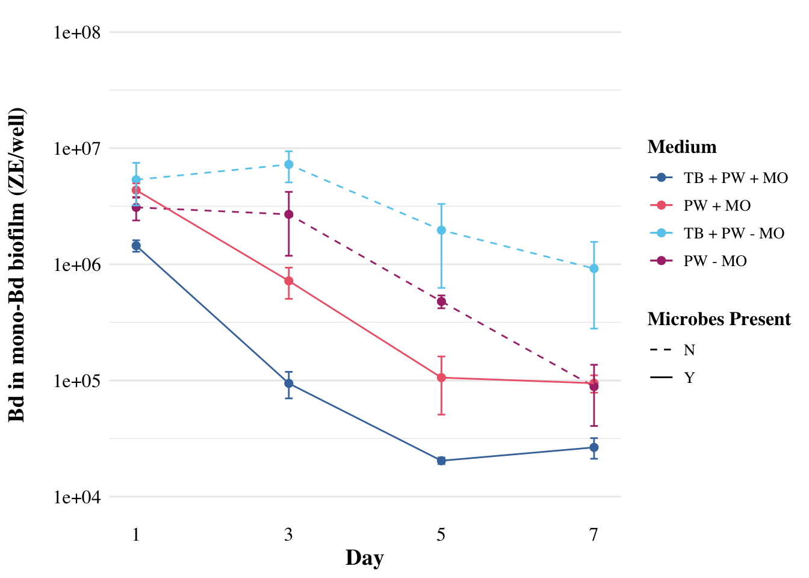
4b EDA
visualize y var: bd load
Commented out to save space, log transformed is better
Code
# # untransformed# ml_noday0 <- monolayer %>%# filter(day != 0) %>%# mutate(log_adh = log(adh)) # note: no zeroes so not log + 1# ggqqplot(ml_noday0, "adh", title = "untransformed")# shapiro.test(ml_noday0$adh) # nope# hist(ml_noday0$adh) # note# # # transformed# ggqqplot(ml_noday0, "log_adh", title = "log transformed") # gorgeous# hist(ml_noday0$log_adh) # better
4b Stats
y var: amount of Bd
x vars: day, treatment, microbes y/n, pw y/n, tb y/n
Best model: Bd ~ day*microbes*TB
Question: Does the amount of Bd in the sample differ across the treatments of presence of microbes, TB, and day?
Model: 3-way ANOVA
results
Results summary
day (p<0.05)
All differ from each other except 5 and 7 (Tukey)
Day 1 > Day 3 > Day 5 = Day 7
microbes (p<0.05)
presence microbes has less Bd (Tukey)
TB (NOT SIG)
day:microbes (p<0.05)
day:TB (NOT SIG)
microbes:TB (p<0.05)
day:microbes:TB (NOT SIG)
Code
ml_noday0 <- monolayer %>%filter(day !=0) %>%mutate(log_adh =log(adh))# quick check: we want day as a FACTORml_noday0 <- ml_noday0 %>%mutate(day =as.factor(day))str(ml_noday0$day)
# set PW-microbes as reference (no milliQ here)ml_noday0$sample_ID <-factor(ml_noday0$sample_ID)ml_noday0$sample_ID <-relevel(ml_noday0$sample_ID, ref ="PW-microbes")
Warning in RET$pfunction("adjusted", ...): Completion with error > abseps
PW 0.22um NCOS PW 0.22um PW 40um NCOS PW 40 um Field bf 0.22
"a" "ab" "c" "ab" "c"
NCOS AE 0.22um
"bc"
Code
# export cld results as a dataframecld_results_rateloss <-cld(post_hoc_rateloss)
Warning in RET$pfunction("adjusted", ...): Completion with error > abseps
Code
labels_rl <- cld_results_rateloss$mcletters$Letterstreatments_rl <-names(labels_rl)labels_rl <-as.character(labels_rl)sig_data_rl <-tibble(treatment = treatments_rl,y_position =c(1.5,2.5,6.5,4, 6.5,4),label = labels_rl)# without microbe depleted ###summary(mod4) # sig effect of treatment
Df Sum Sq Mean Sq F value Pr(>F)
treatment 3 18.23 6.077 4.424 0.0122 *
Residuals 26 35.72 1.374
---
Signif. codes: 0 '***' 0.001 '**' 0.01 '*' 0.05 '.' 0.1 ' ' 1
Code
TukeyHSD(mod4)
Tukey multiple comparisons of means
95% family-wise confidence level
Fit: aov(formula = rate_loss ~ treatment, data = all_parts2)
$treatment
diff lwr upr p adj
NCOS PW 40 um-PW 40um -2.5364280 -4.5699791 -0.5028769 0.0104552
Field bf 0.22-PW 40um -0.1544017 -1.5101025 1.2012990 0.9891809
NCOS AE 0.22um-PW 40um -1.1302884 -3.1638395 0.9032627 0.4377743
Field bf 0.22-NCOS PW 40 um 2.3820263 0.2384752 4.5255774 0.0252643
NCOS AE 0.22um-NCOS PW 40 um 1.4061396 -1.2191635 4.0314428 0.4696326
NCOS AE 0.22um-Field bf 0.22 -0.9758867 -3.1194377 1.1676644 0.6023819
Code
post_hoc_rateloss2 <-glht(mod4, # with your ANOVA modellinfct =mcp(treatment ="Tukey"))summary(post_hoc_rateloss2)
Simultaneous Tests for General Linear Hypotheses
Multiple Comparisons of Means: Tukey Contrasts
Fit: aov(formula = rate_loss ~ treatment, data = all_parts2)
Linear Hypotheses:
Estimate Std. Error t value Pr(>|t|)
NCOS PW 40 um - PW 40um == 0 -2.5364 0.7413 -3.422 0.00995 **
Field bf 0.22 - PW 40um == 0 -0.1544 0.4942 -0.312 0.98865
NCOS AE 0.22um - PW 40um == 0 -1.1303 0.7413 -1.525 0.42624
Field bf 0.22 - NCOS PW 40 um == 0 2.3820 0.7814 3.049 0.02376 *
NCOS AE 0.22um - NCOS PW 40 um == 0 1.4061 0.9570 1.469 0.45791
NCOS AE 0.22um - Field bf 0.22 == 0 -0.9759 0.7814 -1.249 0.59140
---
Signif. codes: 0 '***' 0.001 '**' 0.01 '*' 0.05 '.' 0.1 ' ' 1
(Adjusted p values reported -- single-step method)
Code
cld(post_hoc_rateloss2)
PW 40um NCOS PW 40 um Field bf 0.22 NCOS AE 0.22um
"a" "b" "a" "ab"
Code
# export cld results as a dataframecld_results_rateloss2 <-cld(post_hoc_rateloss2)labels_rl2 <- cld_results_rateloss2$mcletters$Letterstreatments_rl2 <-names(labels_rl2)labels_rl2 <-as.character(labels_rl2)sig_data_rl2 <-tibble(treatment = treatments_rl2,y_position =c(7,4,6.5,4),label = labels_rl2)
PIV Data visualization
Exploratory:
Code
exploratory_viz <- all_parts %>%ggplot(aes(y= rate_loss, x = treatment)) +geom_boxplot() +geom_jitter(alpha =0.5, width =0.1) +theme_classic() +theme(legend.position ="bottom",strip.text =element_text(face="bold"),axis.title =element_text(face ="bold")) +xlab("Treatment") +ylab("Rate of Loss of Bd over 7 Days") +ggtitle("Exploratory visualization, not final plot")exploratory_viz
Df Sum Sq Mean Sq F value Pr(>F)
medium 1 0.00 0.0043 0.002 0.963
Residuals 28 53.94 1.9265
ttest
Code
library(car)# Perform Levene's testleveneTest(rate_loss ~ treatment, data = ap3)
Levene's Test for Homogeneity of Variance (center = median)
Df F value Pr(>F)
group 3 1.7137 0.1887
26
Code
ap3 %>%ggqqplot("rate_loss") # good
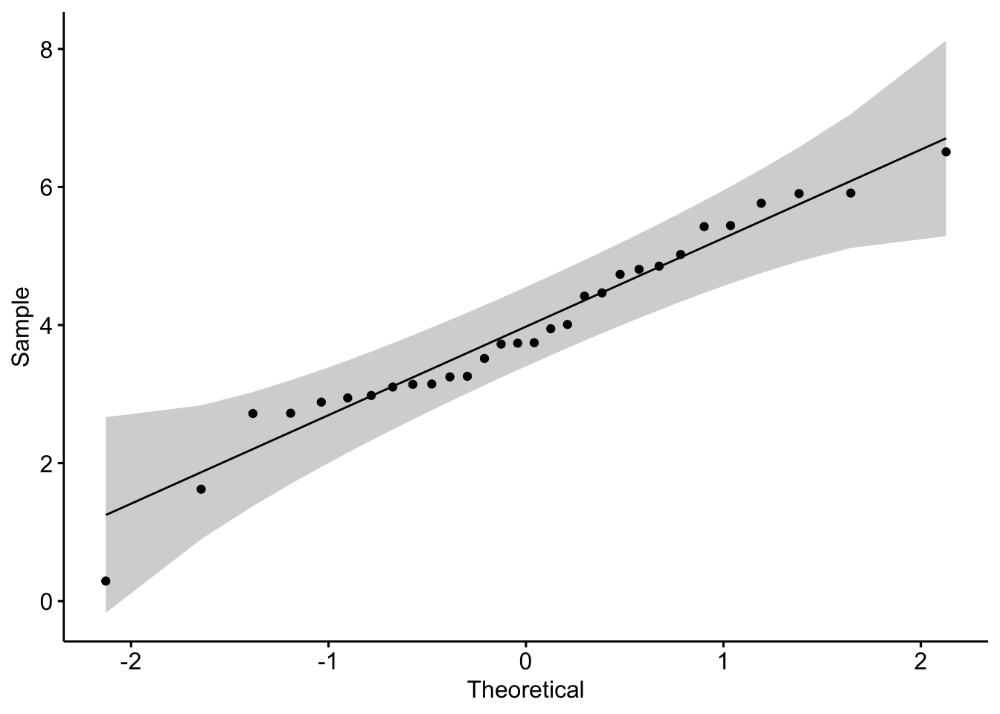
Code
shapiro.test(ap3$rate_loss) # normal, yay!
Shapiro-Wilk normality test
data: ap3$rate_loss
W = 0.96583, p-value = 0.4322
Code
hist(ap3$rate_loss)
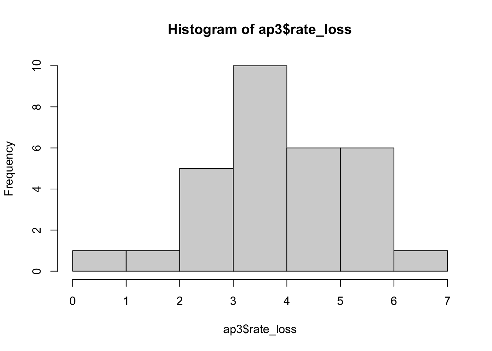
Code
t.test(rate_loss ~ medium, data = ap3, var.equal =TRUE)
Two Sample t-test
data: rate_loss by medium
t = 0.047102, df = 28, p-value = 0.9628
alternative hypothesis: true difference in means between group Field bf and group PW is not equal to 0
95 percent confidence interval:
-1.035228 1.083957
sample estimates:
mean in group Field bf mean in group PW
3.947604 3.923240